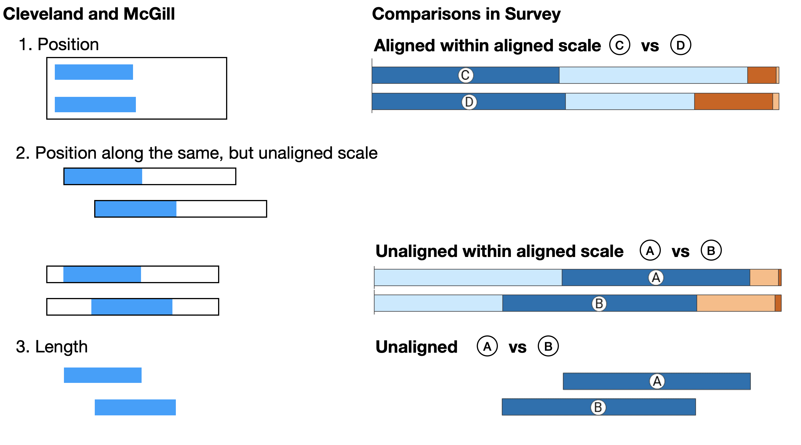
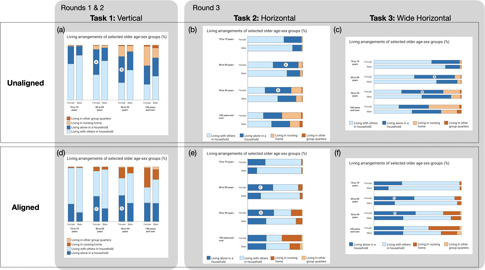
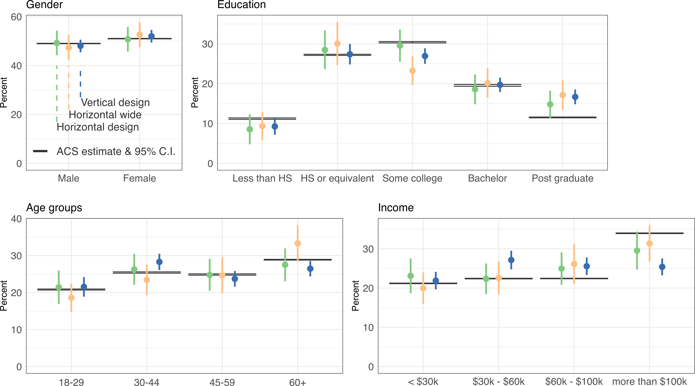
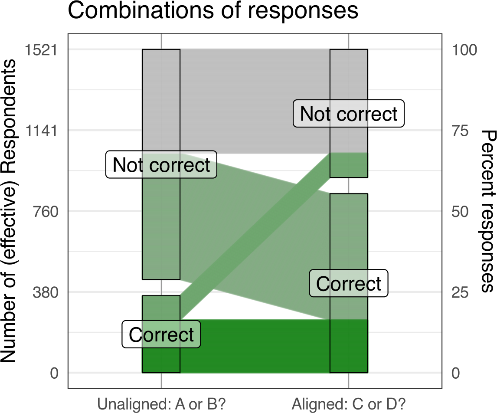
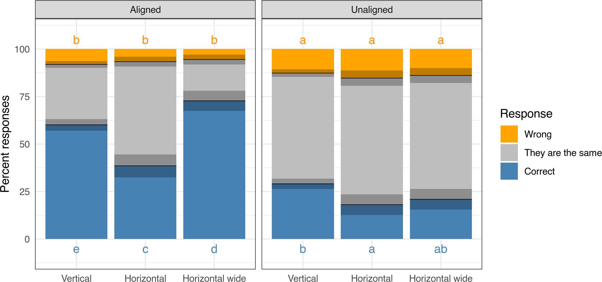
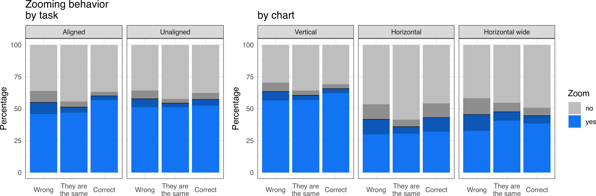
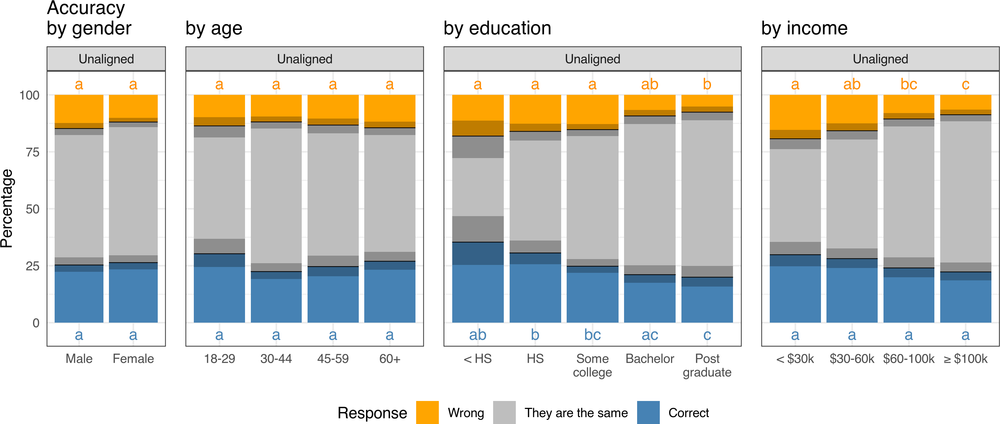

Testing Charts: viewers’ perceptual accuracy in surveys
Introduction
What do viewers see when we show them a data chart? A data chart – at its core – maps values to graphical elements: quantitative elements are represented as measurable features, such as position, size, or shade. Modern data visualizations are much more than a simple, objective mapping of values to a plane; they contain contextual and design elements, and are often structured to support the viewer in understanding a particular view of a set of data or specific pattern underlying the values. Structural choices, such as the choice of a graphical element (e.g., bar or pie), orientation of the chart, and sizing and relative positioning of elements within the chart, are determined by the data visualization practitioner. The design of a data visualization impacts a viewer’s ability to achieve that understanding; a poorly designed data visualization may leave viewers struggling to understand the content or context, or make it difficult to complete accurate and useful comparisons of values across groups or time points. More broadly, the design of a data visualization can change how viewers interact with the chart.
The viewer’s employment of comparisons of the components is a crucial step in the process of interacting with and understanding of chart. Cleveland and McGill (1984) observed as such, and in their seminal study defined the better visual among a pair as the one that allows viewers to make more accurate comparisons. Based on mappings of quantitative variables to different graphical elements, Cleveland and McGill’s study resulted in a ranking of perceptual tasks (such as ranking the larger of two lengths or areas) from most accurate to least accurate, which was then extended by Mackinlay (1986) to a theoretical framework ranking tasks’ order along their ordinal and nominal scales.
Cleveland and McGill’s work – while a foundational user study in graphical perception – utilized a small convenience sample, consisting of only a few individuals recruited from among the authors’ coworkers and their spouses. Heer and Bostock (2010) reproduced Cleveland and McGill’s rankings using a larger sample from a crowd sourcing platform, employing a total of 82 Amazon Mechanical Turk (mTurk) workers for the study. Crowd sourced samples were shown by Borgo et al. (2017) to be biased towards more male, younger, and relatively higher education relative to the adult U.S. population as a whole; generally, convenience and opt-in samples are not representative of the general population, a common target audience for data visualization and scientific communication work. Further, the populations’ emphasis on higher education individuals also leads to results which hold for groups of individuals who may be more likely to have prior exposure to data visualization in the context of scientific communication, or more exposure to data topics in higher education, but may not hold across other groups within the population.
Here, we seek to answer whether it is possible to reproduce some of the previous findings in the context of a survey with a large, nationally-representative set of respondents. Specifically, we present viewers with structural variations of bar charts and ask them to answer questions comparing the size of elements within those charts. We employ a probability-based survey panel and run a series of perception tests with nationally-representative samples of respondents from that panel. The advantage of using a probability-based approach is two-fold. First, we have access to a large sample of survey participants and thus have greater power in making inference about graphical perceptional abilities. Second, the sample is representative of the general adult public in the U.S., and this allows us to test whether prior results from convenience samples hold with a nationally representative sample and whether there are differences in those results across demographic subgroups. Within that context we focus on the following research questions:
How do structural design choices in a data visualization impact viewers’ ability to identify the larger of two elements?
How is viewer interaction with the task impacted by structural design choices in a data visualization?
Are there differences in perception and interaction with the tasks across demographic groups?
In this work, we present the series of tests we completed and the resulting findings. The remainder of the paper is organized as follows: first, we describe the design of the visual stimuli used in the perception tests. We then describe the population of study respondents and obtained survey sample. Subsequently, we share a summary of the resulting survey responses across each of the tests, including analyses on accuracy of responses and response behavior. Finally, we discuss implications of this work and next steps.
Study design – stimulus
Our use of a survey format guides the format and design of the questions asked and how they are presented to respondents. First, participant instructions must be delivered in a very short and easily understandable format, because participants cannot ask clarifying questions about the task as they might be able to in a cognitive lab setting. Our tasks are presented as a short series of questions within a larger survey on a variety of topics. Second, we want to utilize content within the stimulus which is not socially or politically charged for the average U.S. adult; this risks participants reacting to the subject matter within the chart rather than focusing on the task. For this reason, we utilize data on living arrangements of older U.S. adults – a topic which most U.S. adults will have some familiarity with, but is not inherently polarizing. Finally, to prevent viewers from being exposed to slight variations of the same stimulus in a row (and risk unforeseen order effects or respondents using prior questions to inform their responses), we either split a survey sample in two and show each subsample a distinct structural version of the chart or test variations of a chart across distinct rounds of the survey.
Each task is made up of two elements: a visual stimulus and a question about the stimulus. In our study, each visual stimulus is an image of a data visualization, while each question prompts viewers to identify which of two marked pieces in the data visualization is larger.
The comparison between sets of marked pairs is intentionally designed to be a difficult task, with the difference between the values represented in the two marked pieces being chosen close to their just-noticeable difference. The Just-Noticeable Difference (JND) is defined as the smallest difference that will be detected 50% of the time. Prior results from studies on bar charts and pie charts (Lu et al. 2022) inform the differences in charts shown to survey panelists.
We employ comparisons at the JND in our tasks in order to maximize our ability to identify the impact of design changes on viewer accuracy and behavior. Asking perception tasks in a survey differs from the controlled environment of a cognitive lab, where these kind of questions may usually be assessed. Rather than asking the same (or similar) type of question with varied signal strength dozens or hundreds of times, we are limited to only a few questions at a time. With a small set of tasks, we need to present tasks that are perceptually hard, and thus ask questions about stimuli that are close to our perceptual threshold. Therefore, we focus on questions which vary the structure of the presented image, but ask viewers to compare the same underlying data values across those varied images.
We ask participants to determine which of two just-noticeably different marked pieces is larger within each chart, and focus on three main sets of structural variation in the design of that chart. First, we vary the alignment of the pieces in question. Viewers are presented with two marked pieces in a chart that do not share a common baseline (aligned pieces), then two pieces that do share a common baseline (unaligned pieces). Second, we vary the orientation of the chart – we rotate the vertical stacked bar chart, and present a horizontally oriented version of the same chart, with identically sized marked pieces. Finally, we change the aspect ratio of the chart and present a wider version of the horizontally oriented chart which has longer, but thinner, marked pieces.
What we call ‘aligned’ and ‘unaligned’, here, is similar to Cleveland and McGill’s positions along aligned and unaligned scales, but with some modifications. Figure 1 gives an overview of the comparisons of tasks 1 through 3 and the closest corresponding tasks in Cleveland and McGill.
In this paper, both ‘aligned’ and ‘unaligned’ bars share the same axis.
Aligned tiles are additionally anchored in the same position along the axis, i.e. the difference between their sizes can be reduced to a positional assessment, which in the absence of three-dimensional cues seems to be the general strategy viewers use when evaluating barcharts (Zacks et al. 1998).
Unaligned tiles do not share this anchor of position, i.e. the difference between their sizes needs at least two comparisons of positions. However, unaligned bars in a stacked barchart are not just assessments of the lengths of bars – the other tiles in the chart provide a reference frame of the shared axis, which should help with an assessment of the tiles’ sizes. As shown in the sketch of Figure 1, this framing leads to a stimulus that is between Cleveland and McGill’s task of ‘position along the same but unaligned axis’ and an assessment of length.
We would expect that comparing unaligned tiles is a harder task (with correspondingly lower levels of accuracy) than a comparison of aligned tiles, with the framing given by the other tiles in the same column mitigating some of this difficulty. (Talbot, Setlur, and Anand 2014).


Task 1: Vertical stacked bar
(a,d) shows the two stacked bar charts shown to participants in the first task. The marked tiles in each plot are 155 pixels apart, which leads to a JND of 3.5 pixels based on Lu et al. (2022)‘s model. The heights of the bars are 205 (left) and 213 pixels (right), corresponding to about twice the JND. This difference should lead to a relatively high accuracy rate for participants and simultaneously limit the amount of frustration resulting from a task that is perceived as ’too hard’.
Both charts show the same data with slight modifications to the order of the levels – the first and second level in each of the bars are reversed between the left and the right chart. Both charts are displayed at the same size, i.e. in both cases both the difference in size between the bars and the horizontal distance between the bars is the exact same amount. This leaves the vertical positioning of the bars as the only difference between the charts. Any differences in observed responses can therefore be attributed to this difference in presentation.
Task 2: Horizontal stacked bar
The visual mappings in the second task, shown in (b, e), are identical to the first task, but the axes of the chart are rotated so that the stacked bars are represented in a horizontal format. This represents a structural change in how the data are presented to the viewer while preserving the pixel size of the elements viewers must compare. Tasks 2 and 3 were asked within the same survey round (Round 3) and the full sample was randomly split among respondents, with 50% of participants seeing the Task 2 stimuli and 50% of participants seeing the Task 3 stimuli.
Task 3: Horizontal wide stacked bar
The images utilized in the third task, (c,f) again represent the same data as in the first two tasks, and the overall image has dimensions which are identical to the images in the first two tasks, displaying at the same size during the survey. The length of bars is increased to fit the new dimensions. This increases the difference in the length of bars from previously 8 pixels to 13 pixels. The widths of the tiles are adjusted accordingly (from 50 to 30 pixels) to keep the overall area of the tiles approximately constant.
Question text
When viewing each chart, participants were asked to compare the relative sizes of marked elements within the chart:
“There are many charts used in the news media to portray data visually. Looking at the chart below, which of the marked dark blue pieces is bigger, A or B? Just your best guess is fine.
A is bigger
B is bigger
They are the same
When presented with the aligned version of each chart, pieces were marked with a C and D and the question text is updated accordingly. In all scenarios, the second option (B [D] is bigger) is the correct response.
For a given task, viewers are first presented with the unaligned version of the task, followed by the aligned version of the task. The time in seconds that each respondent spent on each task was recorded, as well as whether the participant zoomed in on each chart while answering the question. Respondents were also asked to rate their certainty in their response to each question on a five-point scale.
Study design – participants
Participants were recruited as part of NORC’s AmeriSpeak panel, which utilizes a probability-based sampling methodology and samples U.S. households from NORC’s National Sample Frame that provides coverage of over 97% of U.S. households. The current panel size is 54,001 panel members aged 13 and over residing in over 43,000 households (Dennis 2019, updated 2022). Each test was conducted using the AmeriSpeak Omnibus survey, which runs biweekly and samples around 1,000 U.S. adults to answer questions on a variety of topics. Our tests require visual inspection of an image; for this reason, our survey questions were only presented to web-based panelists and not panelists who respond via phone interviews. The panel has 45,565 web-based panelists, representing 93.3% of the total panel and 96.3% of the total panel weights.
The Omnibus sample is not longitudinal in nature, i.e. we do not have any information about whether the same panelists were included in multiple rounds. While there is a (small) chance that panelists are included in multiple rounds of our data, there was at least a one month gap between viewing each visual stimulus, and for the purposes of the analysis we will consider data from these viewings as independent.
Study design – survey weighting
The sample used for each Omnibus study is selected from the AmeriSpeak Panel using 48 sampling strata, split by age, race/Hispanic ethnicity, education, and gender, with the size of each sample per sampling stratum determined by the population distribution for each stratum. In addition, sample selection takes into account expected differential survey completion rates by demographic groups in order to achieve a representative sample of the target population. Collected data are weighted to the latest Current Population Survey (CPS) benchmarks from the U.S. Census Bureau. They are balanced by gender, age, education, race/ethnicity, and geographic region. All calculations in this paper are done in R (R Core Team 2022), and weights are applied in analyses using the survey package (Lumley 2004) version 4.0 (Lumley 2020) based on Lumley (2010).
When combining responses from different surveys, weights are rescaled with respect to the total population, so that their order after combining still reflects their relative importance.
We combine (rather than cumulate) a set of \(\ell\) surveys \(S_1\), \(S_2\), … \(S_\ell\) (with $ $ ) as described in O’Muircheartaigh and Pedlow (2002), by multiplying weights in \(S_i\) by \(\lambda_i\), for \(1 \le i \le \ell\). \(\lambda_i \in [0,1]\) with \(\sum_i \lambda_i = 1\) is given as
\[ \lambda_i = \frac{n_i/d_i}{\sum_{j=1}^{\ell}n_j/d_j}, \] where \(n_i\) is the nominal sample of survey \(S_i\) and \(d_i\) are the design effects for the estimators.
Here, \(d_i\) are estimated as
\[ d_i = 1 + CV(w \in S_i)^2 \]
where \(CV\) is the coefficient of variation of the weights \(w\) within each sample, and is estimated as in Kish (1965) :
\[ CV(w \in S) = \frac{\widehat{Var(w)}}{\bar{w}^2}. \]
The data for this paper were collected in several rounds as part of the NORC Omnibus. The resulting number of participants, effective sample sizes, and \(\lambda\) values are shown in .
| Name | Date | # Participants | Effective Sample Size | Sum of weights \(\sum_i w_i\) | \(\lambda_i\) |
|---|---|---|---|---|---|
| Round 1 | April 2022 | 933 | 521.1 | 934.9 | \(\lambda_1\) = 0.343 |
| Round 2 | May 2022 | 953 | 485.7 | 953.4 | \(\lambda_2\) = 0.320 |
| Round 3 | June 2022 | 921 | 513.5 | 923.1 | \(\lambda_3\) = 0.338 |
| Total | — | 2807 | 1520.8 |
Results
Respondents
A total of 2807 respondents participated across the three rounds. The number of responses and corresponding effective sample sizes in each round are shown in . All responses were combined into one set of survey responses, with adjusted combined sample weights and indicators for which task each respondent was exposed to. The resulting sample sizes corresponding to each task are shown in .
| Name | Description | # Participants | Effective Sample Size |
|---|---|---|---|
| Task 1 | Vertical | 1886 | 1007.1 |
| Task 2 | Horizontal | 459 | 266.5 |
| Task 3 | Horizontal wide | 462 | 249.1 |
Distributions of demographic characteristics across each task are shown in , the dark points show percentages for US adults based on the 5 year estimates of the American Community Survey 2021. The distribution of demographics are all quite similar across tasks and their 90% margin of errors (hashed lines) for the most part cover the Census estimates.

Accuracy of responses
We first investigate respondent accuracy in selecting the correct response. As participants were able to select the option ‘They are the same’, there are several ways to model accuracy and response. The argument could be made that for the purposes of practical interpretation, ‘they are the same’ is a correct choice, as the options are visually very similar and not substantially different values within the context of the data shown in the chart. However, we are interested in understanding whether viewers can perceive the difference and correctly identify which piece is larger and thus consider multiple ways of modeling response to investigate participant response patterns. We begin by defining a measure of binary ‘correctness’, for which all answers that are not the correct option (B [D] is bigger) are ‘incorrect’, including the selection of ‘they are the same’.
(a) displays all responses along the binary correctness measure, separated by whether the stimulus was an aligned task or unaligned task. We can see that levels of accuracy for all responses are significantly higher for the ‘easier’ (aligned) task, with about twice as many respondents correctly selecting the larger of the two marked elements.
Because each participant was shown both the aligned and unaligned versions of the chart, we can use a paired \(t\)-test to compare mean accuracy between the two charts. The resulting \(t\)-statistic is highly significant (\(t\) statistic: 21.2, df: 2265, \(p\)-value: \(\ll 0.0001\)).

Next, we consider an ordinal model to investigate response behavior across all three options – ‘A [C] is bigger’, ‘B [D] is bigger’, and ‘They are the same’, and consider these response patterns across each of the stimuli.

Figure 5 shows the results of a cell-means model with ordinal response \(Y_k\), where \(Y_k\) is the \(k\)th participant’s response, \(Y_k \in \{1, 2, 3\}\), where ‘correct’ is encoded as 1, ‘they are the same’ is encoded as 2, and ‘wrong’ is encoded as 3:
\[ \text{logit }P(Y_k \le \ell) = \mu_{ij\ell(k)}, \]
where \(\ell \in \{1, 2\}\); \(i \in \{1, 2\}\) is the comparison type (1 = Aligned, 2 = Unaligned), and \(j \in \{1, 2, 3\}\) is the chart design, with 1 = Vertical, 2 = Horizontal, and 3 = Horizontal wide. The estimated values and 95% confidence intervals are shown in Table 3. The lowercase letters indicate significances between pairs of estimates: two estimates (in the same column) are significantly different at 5% level, if they do not have any letter in common (Piepho 2004).
| Odds of accuracy by task and chart type | ||||||
| correct | same or wrong | correct or same | wrong | |||||
|---|---|---|---|---|---|---|
| Est. | [95% CI] | Est. | [95% CI] | |||
| Unaligned | ||||||
| Horizontal | 0.22 | [0.15, 0.32] | a | 5.54 | [4.04, 7.59] | a |
| Horizontal wide | 0.26 | [0.19, 0.37] | ab | 6.20 | [4.46, 8.61] | a |
| Vertical | 0.41 | [0.36, 0.47] | b | 6.90 | [5.75, 8.28] | a |
| Aligned | ||||||
| Horizontal | 0.63 | [0.49, 0.81] | c | 14.02 | [9.23, 21.30] | b |
| Horizontal wide | 2.67 | [2.04, 3.48] | d | 17.12 | [10.49, 27.95] | b |
| Vertical | 1.51 | [1.33, 1.71] | e | 11.33 | [8.99, 14.28] | b |
One pattern in accuracy holds across each of the three structural variations: the aligned task has a higher level of accuracy than its unaligned counterpart. Interestingly, while we expect an improvement in accuracy when shifting from the horizontal to the horizontal wide design given the larger difference in pixel length between the two pieces, the resulting effects on the accuracy of the responses are not completely straightforward: the shift from a vertical to the (tall) horizontal design is detrimental to an accurate perception for both aligned and unaligned comparisons. The re-scaled design of the wide horizontal bars reclaims some of the loss for unaligned bars and outperforms the vertical design by a similar margin in aligned bars, but does not out-perform the vertical design when comparing unaligned tiles.
Rates of selecting the incorrect response are low across all three structural variations and the aligned and unaligned tasks; while viewers select the incorrect response at significantly higher rates for all three unaligned tasks relative to the aligned tasks, those rates do not differ significantly across the three structural variations. Most of the observed differences in response patterns across structural variations are attributed to respondents’ selection between the correct option or the ‘they are the same’ option.
To better comprehend these observed patterns, we investigate viewer interaction with the tasks more broadly as well as differences in response selection across demographic groups.
Respondent behavior
One contributing factor to the observed patterns in response accuracy might be the way that participants interact with the different designs. Across all tasks, about half of all participants make use of the option to zoom into charts. We observe that while zooming does help with the overall accuracy (which is in agreement with the findings by Lu et al. (2022) about the physical size of stimuli), the increase is not significant. However, different designs lead to different rates of zooming: we observe in that when dealing with the vertical design, the rate of zooming is significantly higher than for the two horizontal designs.

To formalize this pattern in a model, let \(Y_{jk}\) describe the zooming behavior of panelist \(k\) on task \(j\). We model zooming behavior (no = 0, yes = 1) as a logistic regression by correctness of response (\(\rho\)), task (\(\tau\)), and design (\(\delta\)) of the chart:
\[ \text{logit } P(Y_k \le 1) = \mu + \rho_{i(k)} + \tau_{j(k)} + \delta_{\ell(k)}, \]
The resulting model estimates and confidence intervals are displayed in . We observe that zooming behavior only differs significantly by structural design; rates do not differ significantly between the aligned and unaligned tasks, nor do they differ significantly by the chosen response. This higher rate of zooming does not necessarily lead to higher accuracy; although rates of accuracy are significantly higher for the vertical orientation relative to the horizontal orientation, they are not significantly higher – and in fact, are significantly lower on the aligned task – than the accuracy for the horizontal wide orientation.
| Estimates for logistic regression on zooming behavior | ||||
| term | estimate | SE | t-statistic | p-value |
|---|---|---|---|---|
| $$\hat{\mu}$$ | −0.35 | 0.15 | −2.4 | 0.0155 |
| Response | ||||
| $$\text{They are the same } \widehat{\rho}_{2}$$ | −0.17 | 0.09 | −1.9 | 0.0578 |
| Wrong $$\widehat{\rho}_{3}$$ | −0.06 | 0.13 | −0.5 | 0.6466 |
| Task | ||||
| Aligned $$\widehat{\tau}_{2}$$ | 0.00 | 0.06 | −0.1 | 0.9435 |
| Chart design | ||||
| Horizontal wide $$\widehat{\delta}_{2}$$ | 0.27 | 0.15 | 1.8 | 0.0752 |
| Vertical $$\widehat{\delta}_{3}$$ | 0.98 | 0.13 | 7.7 | < 0.0001 |
How certain are participants?
Using linear scores for the response of Certainty, with ‘not certain at all’ assigned a score of 1 and ‘extremely certain’ assigned a score of 5, we can estimate the effects of task, chart design, and correctness on certainty by using a cell-means model of the form:
\[ Y_{k} = \mu_{ij\ell(k)} + \epsilon_{k}, \]
where \(k = 1, ..., N\), \(\mu_{ij\ell(k)}\) is average certainty (measured on a scale from 1 to 5) of the four combinations of task and correctness by each of the three designs, where \(i = 1, 2\) encodes unaligned/aligned, and \(j=1,2\) encodes wrong, correct, and \(\ell = 1, 2, 3\) encodes horizontal, wide horizontal, and vertical stacked bar charts, respectively. We also assume that errors are normally distributed, i.e. \(\epsilon_k \stackrel{i.i.d}{\sim} N(0, \sigma^2)\) for all \(k = 1, ..., N\). The results are shown in Figure 7. What we find, is that the highest scores for certainty are associated with comparing aligned tiles. Certainty scores are not significantly different between correct and wrong responses. Scores are (mostly) significantly lower for the unaligned task. Interestingly, the lowest scores of certainty are associated with correct responses, here.
Differences across demographic groups
Finally, we turn to investigating responses across demographic groups, a core benefit provided by the large and representative nature of our survey samples. displays response patterns across our three structural variations by gender, age (4 groups), educational attainment (5 groups), and income level (4 groups). Our pattern of higher accuracy in selecting the correct response on the aligned task relative to the unaligned task holds across all demographic groups and structural variations. However, we do observe different response patterns, particularly on the unaligned task, across demographic groups.
Let \(Y_k\) be the response of participant \(k\), on a scale from 1 = ‘wrong’, 2 = ‘they are the same’ to 3 = ‘correct’. We use a generalized cumulative logistic regression, where \(\mu_i\) are intercepts \(1 \le i < 3\), \(X_k\) are demographics of the \(k\)th participant (in form of the model matrix), and \(\beta_{i}\) are the coefficients.
\[ \text{ logit } P(Y_k \le i \mid X_k) = \mu_i + X_{k}'\beta_{i} \]
The resulting model estimates and confidence intervals are shown in . When considering the easier (aligned) task, response patterns do not differ significantly by age, gender, or education level. We do observe, however, a significantly higher log odds of selecting the ‘correct’ or ‘they are the same’ response (or significantly lower log odds of selecting ‘incorrect’) among those with an income between $60,000 and $100,000. When we consider the more difficult (unaligned) task, we see significant separation in response patterns across gender, educational attainment, and income groups. We do not see significant differences in responses by age for either task. Interestingly, we see lower log odds of selecting the ‘correct’ response among those with higher educational attainment (those with a bachelor’s degree or post graduate study) and lower log odds of selecting the ‘incorrect’ response; as income and educational attainment increase, respondents are more likely to select the ‘they are the same’ option during the difficult task. This speaks to the difficulty of the task, and respondents’ interpretation of the task when it is more difficult to perceive small differences.

| Odds of accuracy by task and demographics of respondents | ||||||||||||
| Aligned tiles | Unaligned tiles | |||||||||||
|---|---|---|---|---|---|---|---|---|---|---|---|---|
| correct | same or wrong | correct or same | wrong | correct | same or wrong | correct or same | wrong | |||||||||
| Est. | [95% CI] | Est. | [95% CI] | Est. | [95% CI] | Est. | [95% CI] | |||||
| Intercept | ||||||||||||
| 1.51 | [0.91, 2.50] | 12.75 | [5.59, 29.10] | *** | 0.60 | [0.35, 1.03] | . | 3.24 | [1.70, 6.19] | *** | ||
| Gender | ||||||||||||
| Female | 0.82 | [0.67, 1.01] | . | 1.19 | [0.81, 1.74] | 1.03 | [0.82, 1.30] | 1.42 | [1.07, 1.90] | * | ||
| Age | ||||||||||||
| 30-44 | 1.08 | [0.78, 1.49] | 0.87 | [0.43, 1.75] | 0.79 | [0.55, 1.13] | 0.94 | [0.59, 1.49] | ||||
| 45-59 | 1.13 | [0.80, 1.60] | 0.95 | [0.46, 1.95] | 0.92 | [0.62, 1.35] | 0.76 | [0.48, 1.22] | ||||
| 60+ | 0.96 | [0.69, 1.34] | 0.70 | [0.35, 1.40] | 1.01 | [0.70, 1.45] | 0.73 | [0.46, 1.15] | ||||
| Education | ||||||||||||
| HS or equivalent | 0.77 | [0.46, 1.30] | 0.50 | [0.20, 1.21] | 0.81 | [0.47, 1.40] | 1.22 | [0.66, 2.27] | ||||
| Some college | 0.91 | [0.56, 1.49] | 0.74 | [0.32, 1.71] | 0.63 | [0.38, 1.06] | . | 1.17 | [0.65, 2.12] | |||
| Bachelor | 0.79 | [0.48, 1.32] | 1.12 | [0.42, 2.97] | 0.53 | [0.31, 0.93] | * | 1.82 | [0.91, 3.64] | . | ||
| Post graduate | 0.84 | [0.49, 1.44] | 1.16 | [0.41, 3.30] | 0.51 | [0.28, 0.91] | * | 2.18 | [1.04, 4.57] | * | ||
| Income | ||||||||||||
| $30k - $60k | 1.19 | [0.87, 1.63] | 1.25 | [0.77, 2.05] | 1.00 | [0.71, 1.41] | 1.22 | [0.82, 1.82] | ||||
| $60k - $100k | 1.23 | [0.90, 1.68] | 2.14 | [1.18, 3.86] | * | 0.87 | [0.60, 1.27] | 1.88 | [1.24, 2.87] | ** | ||
| more than $100k | 1.36 | [0.99, 1.88] | . | 1.57 | [0.86, 2.86] | 0.86 | [0.59, 1.25] | 2.18 | [1.34, 3.56] | ** | ||
| Signif. codes: 0 `***' 0.001 `**' 0.01 `*' 0.05 `.' 0.1 ` ' 1 | ||||||||||||
Conclusions
Through this work, we have tested the use of probability-based survey panels to ask perception questions; within a large survey covering a variety of topics, and with a limited number of questions for our specific tasks, we are able to measure viewer perception and produce results consistent with prior studies. Testing data visualization design structures and viewer behavior on a nationally-representative sample is of broad interest and applicability to the scientific communication community, and this study demonstrates a framework under which to complete further work in this area.
With our survey framework, we have shown that we can rank structural variations on design and tasks by their relative accuracy; we identified significantly different rates of respondent accuracy under different designs presenting the same data. The size of our sample aids in identifying this signal.
Further, we can also study respondent behavior and how viewers interact with the chart. Paradata on viewer interaction with the chart (e.g., zooming and time spent on each task) can be collected as well as asking directly asking respondents questions about their certainty. Not only can we collect this information, but we can also identify significant differences in this behavior across different designs. Understanding viewer interaction and engagement is a key component to designing effective data visualizations. If a particular design leads viewers to zoom in more to investigate it when determining a response, we might consider that design to be more frustrating to viewers ‘in the wild’ when viewing it outside of the context of our tests.
Perhaps most salient among our results are the patterns in response behavior across demographic groups. The large size of our sample, paired with the probability-based survey panel approach, afford us the ability to dive into response patterns among demographics across tasks and identify significant differences among them. In particular, the differences across educational attainment groups and income groups underscore the importance of utilizing a representative population when testing perception; prior results in this area may be absorbing bias in responses due to the larger representation of individuals with higher education levels among those study respondents.
While our results are limited to mapping in a stacked bar chart with a specific topic, they demonstrate among them a wealth of insights about how respondents perceive and interact with data visualizations. More expansive work on this topic should be completed to understand how the general public interacts with and understands charts, including expanding to a wider set of structural variations, more aesthetic design variations, and considering differences in respondent behavior across different data topic areas.
- make sure that the main comparison in a plot is lined up – in an interactive setting it would be beneficial to have the possibility of re-ordering the categories to help with comparisons.
- offering zoom-ins help with certainty, even if it does not help with perceptual accuracy
Supplementary Material
- Participant Data (Linear): Link to csv file with the data.
- Data Analysis Code: Link to an html document with annotated code chunks.